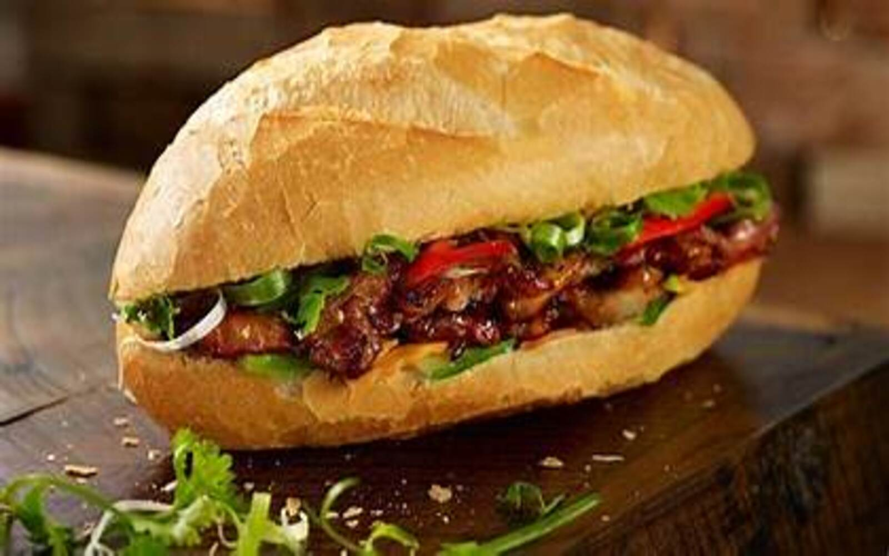

Bánh mì

“Bánh mì”, cái tên thân thương đã in sâu trong tâm trí của bao người con đất Việt, trở thành niềm tự hào của dân tộc và là một trong những đại diện cho tinh hoa ẩm thực Việt. Trải qua bao thăng trầm lịch sử, bánh mì Việt Nam giờ đây đã vượt ra khỏi biên giới quốc gia và để lại dấu ấn trong nền ẩm thực thế giới.
Quay lại Thực đơn